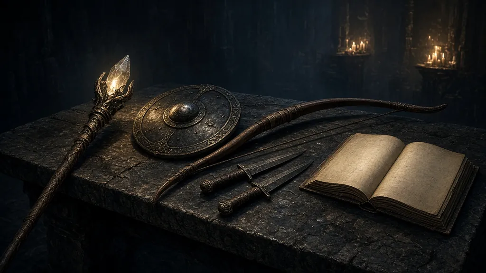

Category
Classes and specializations
The playable classes of World of Warcraft: Forever, based on Blizzard’s published deep dives.
Articles

Thumbnails: ambiance illustrations — not a source.
Short entries

Thumbnails: ambiance illustrations — not a source.